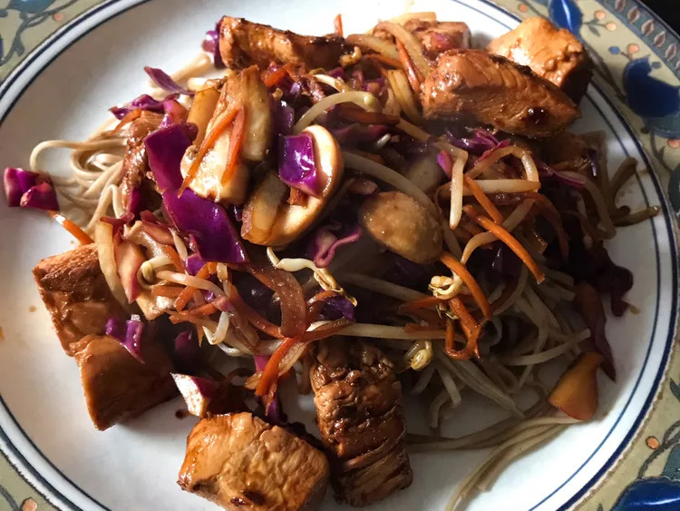

Yakisoba Chicken

Japanese buckwheat flour noodles with chicken at their best! Noodles can be found in Asian food market.
Ingredients
- 1/2 teaspoon sesame oil
- 1 tablespoon canla oil
- 2 tablespoons chile paste
- 2 cloves garlic, chopped
- 2 skinless, boneless chicken breast halves - cut into 1 inch cubes
- 1/2 cup so sauce
- 1 onion, slices lengthwise into eights
- 1/2 medium head cabbage, coarsely chopped
- 2 carrots, coarsley chopped
- 8 ounces soba noodels, coocked and drained
Steps
- In a Large Skillet combine sesame oil, canola oil, and chilli paste; stir-fry 30 seconds. Add garlic and stir-fry an additional 30 seconds. Add chicken and 1/4 cup of soy sauce and stir-fry until chicken is no longer pink, about 5 minutes. Remove mixture from pan, set aside, and keep warm.
- In the emptied pan combine the onion, cabbage, and carrots. Stie-fry until cabbage begins to wilt, 2 to 3 minutes. Stir in the soy sauce, cooked noodles, and the mixture and mix to blend. Serve and enjoy!